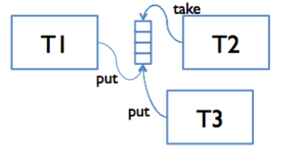

类似于 kylin 的 ExecMan，bthread::ExecutionQueue 提供了异步串行执行的功能。ExecutionQueue 的相关技术最早使用在 RPC 中实现多线程向同一个 fd 写数据，在 r31345 之后加入到了 bthread。
消息传递与竞争消除
在多核并发编程领域，Message passing 作为一种解决竞争的手段得到了比较广泛的应用。它按照业务依赖的资源将逻辑拆分成若干个独立 actor，每个 actor 负责对应资源的维护工作。当一个流程需要修改某个资源的时候，就转化为一个消息发送给对应 actor，这个 actor（通常在另外的上下文中）根据命令内容对这个资源进行相应的修改，之后可以选择唤醒调用者（同步）或者提交到下一个 actor（异步）的方式进行后续处理。

ExecutionQueue 和 mutex 都可以用来在多线程场景中消除竞争。相较 mutex，使用 ExecutionQueue 的优点是任务按提交顺序串行执行，执行任务时无需加锁、也不存在锁竞争；但缺点也同样明显：所有任务只能串行执行，单个耗时较长的任务会拖慢后续所有任务。
不考虑性能和复杂度，理论上任何系统都可以只使用 mutex 或者 ExecutionQueue 来消除竞争。但是在复杂系统的设计上，建议根据不同的场景灵活决定如何使用这两个工具。总之，多线程编程没有万能的模型，需要根据具体的场景，结合丰富的 profiling 工具，最终在复杂度和性能之间找到合适的平衡。
特别指出一点，Linux 中 mutex 无竞争的 lock/unlock 只需要几条原子指令，在绝大多数场景下的开销都可以忽略不计。
创建队列：execution_queue_start
// Iterate over the given tasks
//
// Example:
//
// #include <bthread/execution_queue.h>
//
// int demo_execute(void* meta, TaskIterator<T>& iter) {
// if (iter.is_stopped()) {
// // destroy meta and related resources
// return 0;
// }
// for (; iter; ++iter) {
// // do_something(meta, *iter)
// // or do_something(meta, iter->a_member_of_T)
// }
// return 0;
// }
template <typename T>
class TaskIterator;
// Start a ExecutionQueue. If |options| is NULL, the queue will be created with
// default options.
// Returns 0 on success, errno otherwise
// NOTE: type |T| can be non-POD but must be copy-constructible
template <typename T>
int execution_queue_start(
ExecutionQueueId<T>* id,
const ExecutionQueueOptions* options,
int (*execute)(void* meta, TaskIterator<T>& iter),
void* meta);创建的返回值是一个 64 位的 id，相当于 ExecutionQueue 实例的一个弱引用，可以 wait-free 地在 O(1) 时间内定位一个 ExecutionQueue。你可以到处拷贝这个 id，甚至可以放在 RPC 中，作为远端资源的定位工具。你必须保证 meta 的生命周期，在对应的 ExecutionQueue 真正停止前不会释放。
停止队列：execution_queue_stop 与 execution_queue_join
// Stop the ExecutionQueue.
// After this function is called:
// - All the following calls to execution_queue_execute would fail immediately.
// - The executor will call |execute| with TaskIterator::is_queue_stopped() being
// true exactly once when all the pending tasks have been executed, and after
// this point it's ok to release the resource referenced by |meta|.
// Returns 0 on success, errno otherwise
template <typename T>
int execution_queue_stop(ExecutionQueueId<T> id);
// Wait until the stop task (Iterator::is_queue_stopped() returns true) has
// been executed
template <typename T>
int execution_queue_join(ExecutionQueueId<T> id);stop 和 join 都可以多次调用，都会有合理的行为。stop 可以随时调用，而不用担心线程安全性问题。
和 fd 的 close 类似，如果 stop 不被调用，相应的资源会永久泄露。
安全释放 meta 的时机：可以在 execute 函数中收到 iter.is_queue_stopped() == true 的任务的时候释放，也可以等到 join 返回之后释放，注意不要 double-free。
任务选项：TaskOptions
struct TaskOptions {
TaskOptions();
TaskOptions(bool high_priority, bool in_place_if_possible);
// Executor would execute high-priority tasks in the FIFO order but before
// all pending normal-priority tasks.
// NOTE: We don't guarantee any kind of real-time as there might be tasks still
// in process which are uninterruptible.
//
// Default: false
bool high_priority;
// If |in_place_if_possible| is true, execution_queue_execute would call
// execute immediately instead of starting a bthread if possible
//
// Note: Running callbacks in place might cause the dead lock issue, you
// should be very careful turning this flag on.
//
// Default: false
bool in_place_if_possible;
};
const static TaskOptions TASK_OPTIONS_NORMAL = TaskOptions(/*high_priority=*/ false, /*in_place_if_possible=*/ false);
const static TaskOptions TASK_OPTIONS_URGENT = TaskOptions(/*high_priority=*/ true, /*in_place_if_possible=*/ false);
const static TaskOptions TASK_OPTIONS_INPLACE = TaskOptions(/*high_priority=*/ false, /*in_place_if_possible=*/ true);提交任务：execution_queue_execute
// Thread-safe and Wait-free.
// Execute a task with default TaskOptions (normal task);
template <typename T>
int execution_queue_execute(ExecutionQueueId<T> id,
typename butil::add_const_reference<T>::type task);
// Thread-safe and Wait-free.
// Execute a task with options. e.g
// bthread::execution_queue_execute(queue, task, &bthread::TASK_OPTIONS_URGENT)
// If |options| is NULL, we will use default options (normal task)
// If |handle| is not NULL, we will assign it with the handler of this task.
template <typename T>
int execution_queue_execute(ExecutionQueueId<T> id,
typename butil::add_const_reference<T>::type task,
const TaskOptions* options);
template <typename T>
int execution_queue_execute(ExecutionQueueId<T> id,
typename butil::add_const_reference<T>::type task,
const TaskOptions* options,
TaskHandle* handle);high_priority 的 task 之间的执行顺序也会严格按照提交顺序，这点和 ExecMan 不同，ExecMan 的 QueueExecEmergent 的 AsyncContext 执行顺序是 undefined。但是这也意味着你没有办法将任何任务插队到一个 high priority 的任务之前执行。
开启 in_place_if_possible，在无竞争的场景中可以省去一次线程调度和 cache 同步的开销。但是可能会造成死锁或者递归层数过多（比如不停地 ping-pong）的问题，开启前请确定你的代码中不存在这些问题。
取消任务：execution_queue_cancel
/// [Thread safe and ABA free] Cancel the corresponding task.
// Returns:
// -1: The task was executed or h is an invalid handle
// 0: Success
// 1: The task is executing
int execution_queue_cancel(const TaskHandle& h);返回非 0 仅仅意味着 ExecutionQueue 已经将对应的 task 递给过 execute，真实的逻辑中可能将这个 task 缓存在另外的容器中，所以这并不意味着逻辑上的 task 已经结束，你需要在自己的业务上保证这一点。